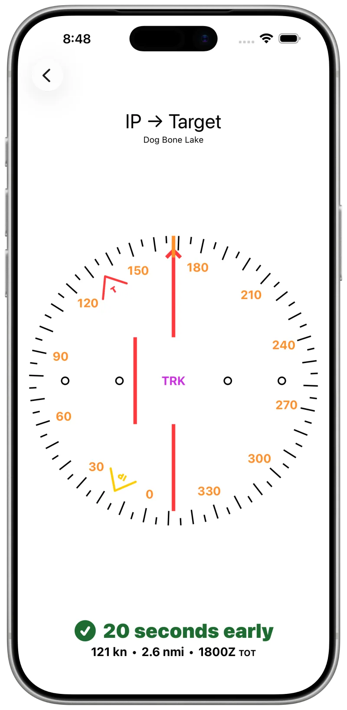
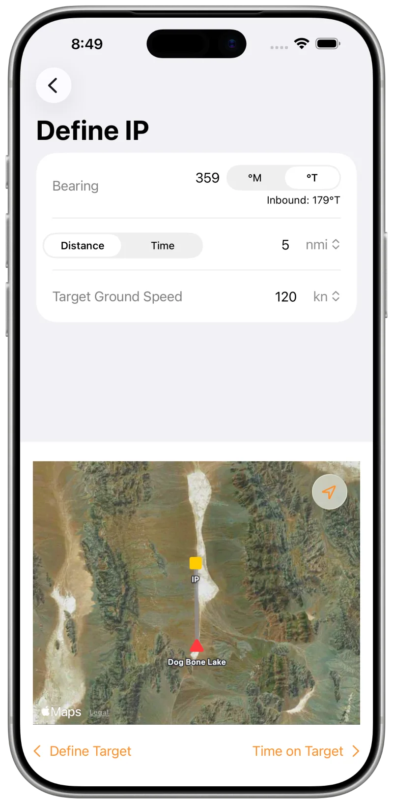
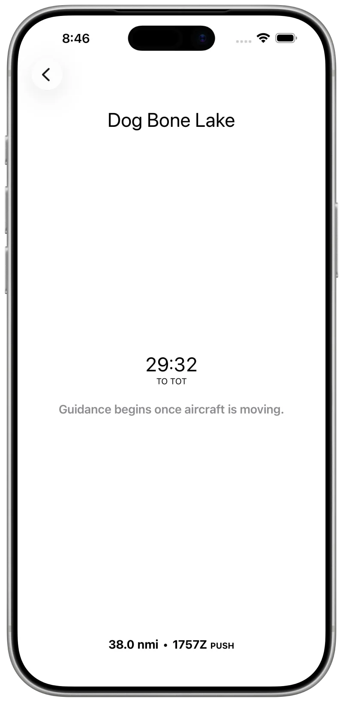
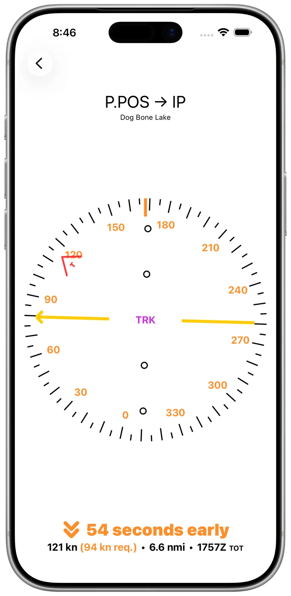
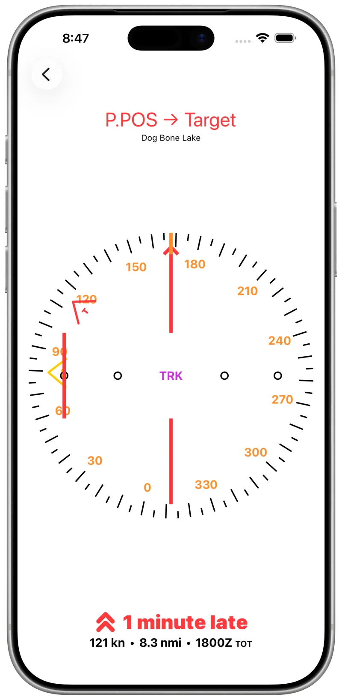
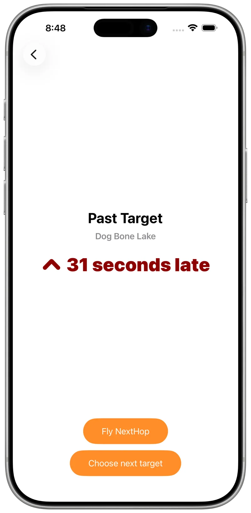

Time-on-target computer
On target. On the second.
IP Inbound turns a target, an initial point and a time on target into live course and speed guidance — so you roll out on the run-in heading and cross the target at the second you promised.
iOS 18 iPhone · iPad · Apple Watch Free Open source

The problem
Seconds matter
You are lead of a formation over a ceremony, or you are being scored on putting a flour bomb on a mock target. Either way you are handed three things: a target, a time on target, and an initial point or run-in direction.
The rest is on you — pick a run-in speed, plan the arrival over the IP, and keep adjusting as the winds and the timeline move. When a band or a pyro cue is keyed to your pass, ten seconds off is wrong.
IP Inbound does that arithmetic continuously, in flight, so you can fly.
Sequence
From thirty minutes out to eight seconds past
Set it up on the ground, then fly a single screen that changes as the clock runs down.
-
PlanTarget · IP · TOT
Set the target and the run-in
Place the target by map or by name, or type coordinates as latitude/longitude, UTM or MGRS — tap them to cycle through DMS, DMM, DD, UTM and MGRS. Then set the bearing, distance and ground speed for the run-in.
IP Inbound works the TOT backwards to find your time over the IP. No final TOT yet? Set it later — it can change in the air.

-
T−30:00Ground
Hold the timeline before you start
On the ground the app is a countdown to TOT — enough to keep engine start, taxi and departure honest against the clock.

-
T−07:00Pre-IP
Direct to the initial point
Airborne, the course deviation indicator gives direct-to guidance to the IP from your ground track and magnetic heading. Yellow points at the IP; a red chevron keeps the target in view.
Below it, speed deviation tells you to speed up or slow down to make your time over the IP — or, if you are very early, becomes a countdown to your push time.

-
T−03:00Contingency
When there is no longer time for the IP
If the arithmetic says you cannot fly the IP and still make the target, the app says so: the title turns red, reads P.POS → Target, and guidance goes direct, bypassing the IP.

-
T−02:00Run-in
On track, on speed
Past the IP inbound, the indicator switches to desired-track guidance along the IP-to-target bearing, and speed deviation drives you to cross at exactly TOT.
-
T+00:08Past target
Read the result, then take the next one
Once you are past the target the app reports the pass: seconds early or late, graded on the same scale you were flying to.
Set several targets with sequential TOTs before you fly, then chain them back-to-back with one tap after each pass.

Spec
What it accounts for
- Guidance
- Course deviation direct to the IP before the run, desired-track along the IP-to-target bearing after it.
- Turns
- Timing includes the turn from your present heading to the IP and the IP-to-target turn, taken as level 30°-banked turns the short way round. Throw in a 360 and the estimate still holds.
- Watch
- The indicator, the countdown and speed guidance repeat on Apple Watch, for when the phone is kneeboarded and your eyes are outside.
- Lock screen
- A Live Activity keeps the countdown to TOT visible without unlocking.
- Sync
- Targets sync across your devices over iCloud — build the list on the iPad, fly it from the iPhone.
- Position
- GPS is processed entirely on device and is never transmitted anywhere.
- Units
- Distance and speed in knots, MPH or KPH; times local or Zulu. Tap the value to cycle.
- License
- MIT, open source. No price, no subscription, no ads, no tracking.